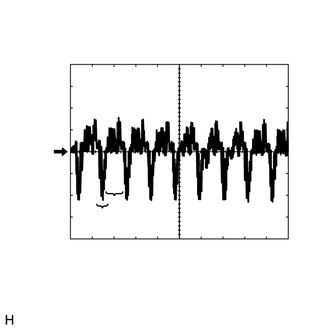
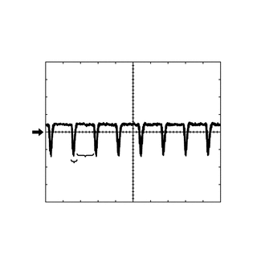

RM3140CG
_56
音频/视频/车载通信系统
_023998
音频/视频系统
_0116391
音频和视频系统（无线电收音机和显示屏型）
U
音频/视频系统 音频和视频系统（无线电收音机和显示屏型） ECU 端子
- 提示：
-
连接器与零部件连接时，从连接器后部进行检查。
无线电收音机和显示屏接收器总成

2.167,0.188 2.563,0.375
0.396,0.188
2.229,1.594 2.625,1.781
0.396,0.188
1.438,1.594 1.833,1.781
0.396,0.188
3.792,1.573 4.188,1.76
0.396,0.188
5.271,1.427 5.667,1.615
0.396,0.188
4.469,0.188 4.865,0.375
0.396,0.188
2.24,0.198 2.594,0.396
0.354,0.198
10
false
E35
4.542,0.198 4.99,0.427
0.448,0.229
10
false
E33
1.552,1.604 1.958,1.802
0.406,0.198
10
false
E2
2.354,1.604 2.865,1.865
0.51,0.26
10
false
E5
3.917,1.573 4.271,1.771
0.354,0.198
10
false
X3
5.375,1.427 5.729,1.625
0.354,0.198
10
false
RA
| 端子编号（符号） | 配线颜色 | 端子描述 | 条件 | 规定状态 |
|---|---|---|---|---|
| E2-1 (FR+) - E2-7 (GND1) | LG - BR | 声音信号（右前） | 音响系统正在播放 | 输出与声音信号同步的波形 |
| E2-2 (FL+) - E2-7 (GND1) | P - BR | 声音信号（左前） | 音响系统正在播放 | 输出与声音信号同步的波形 |
| E2-3 (ACC1) - E2-7 (GND1) | GR - BR | 电源 (ACC) | 点火开关 OFF | 低于 1 V |
| 点火开关 ACC | 11 至 14 V | |||
| E2-4 (+B1) - E2-7 (GND1) | SB - BR | 电源 (+B) | 始终 | 11 至 14 V |
| E2-5 (FR-) - E2-7 (GND1) | L - BR | 声音信号（右前） | 音响系统正在播放 | 输出与声音信号同步的波形 |
| E2-6 (FL-) - E2-7 (GND1) | V - BR | 声音信号（左前） | 音响系统正在播放 | 输出与声音信号同步的波形 |
| E2-7 (GND1) - 车身接地 | BR - 车身接地 | 接地 | 始终 | 低于 1 V |
| E2-10 (ILL+) - E2-7 (GND1) | G - BR | 照明信号 | 灯光控制开关 OFF | 低于 1 V |
| 灯光控制开关置于 TAIL 或 HEAD 位置 | 11 至 14 V | |||
| E5-1 (RR+) - E2-7 (GND1) | R - BR | 声音信号（右后） | 音响系统正在播放 | 输出与声音信号同步的波形 |
| E5-2 (RL+) - E2-7 (GND1) | B - BR | 声音信号（左后） | 音响系统正在播放 | 输出与声音信号同步的波形 |
| E5-3 (RR-) - E2-7 (GND1) | W - BR | 声音信号（右后） | 音响系统正在播放 | 输出与声音信号同步的波形 |
| E5-6 (RL-) - E2-7 (GND1) | Y - BR | 声音信号（左后） | 音响系统正在播放 | 输出与声音信号同步的波形 |
| E33-1 (IG) - E2-7 (GND1) | L - BR | 电源 (IG) | 点火开关 OFF | 低于 1 V |
| 点火开关 ON | 11 至 14 V | |||
| E33-2 (REV) - E2-7 (GND1) | R - BR | 倒档信号 | 参见工作情况检查中的“检查车辆信号”
单击此处 (  201406,999999,_56,_023998,_0116391,RM100000000D9GW,) 201406,999999,_56,_023998,_0116391,RM100000000D9GW,)
|
- |
| E33-4 (MACC) - E2-7 (GND1) | R - BR | 话筒电源 | 点火开关 OFF | 低于 1 V |
| 点火开关 ACC | 4 至 6 V | |||
| E33-5 (MIN+) - E2-7 (GND1) | B - BR | 话筒语音信号 | 参见工作情况检查中的“检查话筒”
单击此处 ( 201406,999999,_56,_023998,_0116391,RM100000000D9GW,)
|
- |
| E33-6 (SNS2) - E2-7 (GND1) | G - BR | 话筒连接检测信号 | 始终 | 低于 1 V |
| E33-9 (CANH) | G | CAN 通信信号 | - | - |
| E33-10 (CANL) | W | CAN 通信信号 | - | - |
| E33-11 (AGND) - 车身接地 | 屏蔽 - 车身接地 | 屏蔽接地 | 始终 | 低于 1 V |
| E33-15 (PKB) - E2-7 (GND1) | B - BR | 驻车制动信号 | 参见工作情况检查中的“检查车辆信号”
单击此处 ( 201406,999999,_56,_023998,_0116391,RM100000000D9GW,)
|
- |
| E33-17 (SPD) - E2-7 (GND1) | V - BR | 车速信号 | 参见工作情况检查中的“检查车辆信号”
单击此处 ( 201406,999999,_56,_023998,_0116391,RM100000000D9GW,)
|
- |
| E33-18 (SGND) - 车身接地 | 屏蔽 - 车身接地 | 屏蔽接地 | 始终 | 低于 1 V |
| E33-19 (MIN-) - E2-7 (GND1) | W - BR | 话筒语音信号 | 参见工作情况检查中的“检查话筒”
单击此处 ( 201406,999999,_56,_023998,_0116391,RM100000000D9GW,)
|
- |
| E33-21 (SW1) - E33-23 (SWG) | SB - B | 方向盘衬垫开关信号 | 开关未按下 | 2.97 至 3.56 V |
| 搜索+ 开关按下 | 0.27 至 0.35 V | |||
| 搜索- 开关按下 | 0.86 至 1.03 V | |||
| 音量+ 开关按下 | 1.51 至 1.79 V | |||
| 音量- 开关按下 | 2.22 至 2.66 V | |||
| E33-22 (SW2) - E33-23 (SWG) | R - B | 方向盘衬垫开关信号 | 开关未按下 | 2.97 至 3.56 V |
| 按下 MODE/HOLD 开关 | 0.27 至 0.35 V | |||
| 挂机开关按下 | 0.86 至 1.03 V | |||
| 摘机开关按下 | 1.51 至 1.79 V | |||
| E33-23 (SWG) - E2-7 (GND1) | B - BR | 方向盘衬垫开关接地 | 始终 | 低于 1 V |
| E33-25 (ADPG) - E2-7 (GND1) | SB - BR | 外部设备连接检测信号 | 连接了外部设备 | 低于 1 V |
| 未连接外部设备 | 2.1 至 3 V | |||
| E33-26 (VAR+) - E33-27 (VA-) | G - R | 声音信号（右侧） | 外部设备正在播放（使用立体声插座时） | 输出与声音信号同步的波形 |
| E33-27 (VA-) - E2-7 (GND1) | R - BR | 接地 | 始终 | 低于 1 V |
| E33-28 (VAL+) - E33-27 (VA-) | B - R | 声音信号（左侧） | 外部设备正在播放（使用立体声插座时） | 输出与声音信号同步的波形 |
| E35-11 (CA+) - E2-7 (GND1) | R - BR | 电视摄像机电源 | 点火开关 ACC | 5.5 至 7.05 V |
| E35-12 (V+) - E2-7 (GND1) | B - BR | 视频信号 | 点火开关 ON
换档杆置于 R 摄像机镜头未遮住，显示图像 |
产生脉冲
（请参考波形 1） |
| 点火开关 ON
换档杆置于 R 摄像机镜头被遮住，使屏幕黑屏 |
产生脉冲
（请参考波形 2） |
|||
| E35-23 (CGND) - 车身接地 | 屏蔽 - 车身接地 | 屏蔽接地 | 始终 | 低于 1 V |
| E35-24 (V-) - E2-7 (GND1) | W - BR | 接地 | 始终 | 低于 1 V |
| X3-1 (USV1) | - | 电源 | - | - |
| X3-2 (US1-) | - | 数据信号 | - | - |
| X3-3 (US1+) | - | 数据信号 | - | - |
| X3-4 (UGD1) | - | 接地 | - | - |
| X3-5 (USG1) | - | 屏蔽接地 | - | - |
| RA-5 (ANT+) - E2-7 (GND1) | - - BR | 天线电源 | 点火开关 ACC
无线电收音机开关打开，并选择 FM 或 AM |
11 至 14 V |
a.
参考（示波器波形）：
i.

1.073,2.135 0.917,2.719
0.917,2.719 0.854,2.719
false
1.198,2.01 1.385,2.729
1.385,2.729 1.5,2.729
false
0.208,1.5 0.542,1.667
0.333,0.167
10
GND
0.667,2.646 0.813,2.813
0.146,0.167
10
*b
1.5,2.646 1.646,2.813
0.146,0.167
10
*c
0.135,0.135 0.344,0.333
0.208,0.198
10
*a
| *a | 波形 1（摄像机镜头未遮住，显示图像） |
| *b | 同步信号 |
| *c | 视频波形 |
波形 1（摄像机镜头未遮住，显示图像）
| 项目 | 内容 |
|---|---|
| 测量端子 | E35-12 (V+) - E2-7 (GND1) |
| 测量设定 | 200 mV/格，50 μs/格 |
| 条件 | 点火开关 ON，换档杆置于 R |
- 提示：
- ·
视频波形根据后电视摄像机总成发送的图像而变化。
·将点火开关置于 ACC 位置时，持续不断输出视频波形。
ii.

0.719,2.729 0.865,2.729
0.865,2.729 0.958,2.115
false
1.104,2.042 1.229,2.74
1.229,2.74 1.438,2.74
false
0.083,1.635 0.5,1.802
0.417,0.167
10
GND
0.521,2.646 0.688,2.854
0.167,0.208
10
*b
1.458,2.656 1.635,2.865
0.177,0.208
10
*c
0.146,0.125 0.313,0.333
0.167,0.208
10
*a
| *a | 波形 2（摄像机镜头被遮住，使屏幕黑屏） |
| *b | 同步信号 |
| *c | 视频波形 |
波形 2（摄像机镜头被遮住，使屏幕黑屏）
| 项目 | 内容 |
|---|---|
| 测量端子 | E35-12 (V+) - E2-7 (GND1) |
| 测量设定 | 200 mV/格，50 μs/格 |
| 条件 | 点火开关 ON，换档杆置于 R |
- 提示：
- ·
视频波形根据电视摄像机总成发送的图像而改变。
·将点火开关置于 ACC 位置时，持续不断输出视频波形。